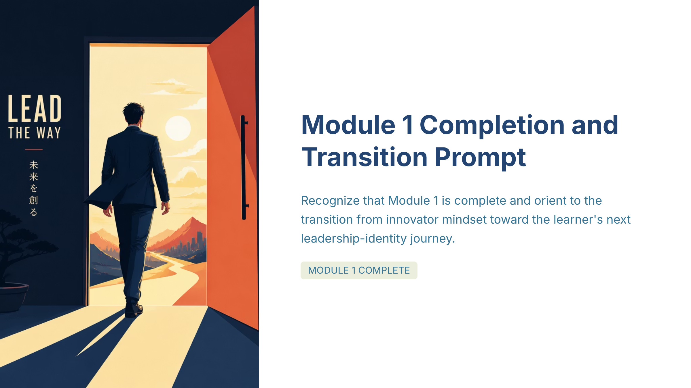

#1
Module 1 Completion and Transition Prompt
slide-01
creativevariant Acluster headCoherence pendingcard 1orientation landscape
Approved slide

[+]Asset status: present | Dimensions: 2400×1350
Motion review: Motion: static | n/a
Cluster c-u01Position establishInterstitial type n/aIsolation target n/aDevelop type n/aArc From Module 1 closure to readiness for Module 2 through a concise bridge that reframes completion as the start of a personal leadership journey
Script
Status: Attached
Cluster-boundary transitionBridge type cluster_boundary
Pause on the single message: the module you just completed set your innovator mindset. LEAD THE WAY isn’t a slogan—it’s your next posture. The work now is pe...
73 words@150 WPM 29.2shead narrationtiming concept-builddensity mediumposition establishintent reflectiveintent serves master
Pause on the single message: the module you just completed set your innovator mindset. LEAD THE WAY isn’t a slogan—it’s your next posture. The work now is personal: how will you begin your leadership‑identity journey inside your own system? To guide that turn, we’ll briefly name the specific foundations you’ve already built, then step into the work of becoming the leader who can carry an opportunity forward.
Script notes
Module 1 Completion and Transition Prompt — Recognize that Module 1 is complete and orient to the transition from innovator mindset toward the learner's next leadership-identity journey.
Voice direction
Voice direction: using global/default settings
Evidence & provenance
- Source ref
- n/a
- File path
- gary/A-creative_slide-01.png
- Created
- 2026-07-10T05:43:39.063545+00:00
- Literal-visual source
- n/a
- Matched segments
- seg-01
- Narration refs
- n/a
- Visual refs
- 0
- Visual mode
- n/a
- Visual file
- n/a
- Motion type
- static
- Motion status
- n/a
- Motion source
- n/a
- Motion duration
- n/a
- Runtime target (s)
- n/a
- Motion asset
- n/a
- Timing role
- concept-build
- Content density
- medium
- Visual detail load
- medium
- Bridge type
- cluster_boundary
- Behavioral intent
- reflective
- Duration rationale
- Brief reflective close-and-turn with two visual anchors.
- Cluster position
- establish
- Interstitial type
- n/a
- Isolation target
- n/a
- Quality
- Vera None | Quinn None
Findings
No findings attached.